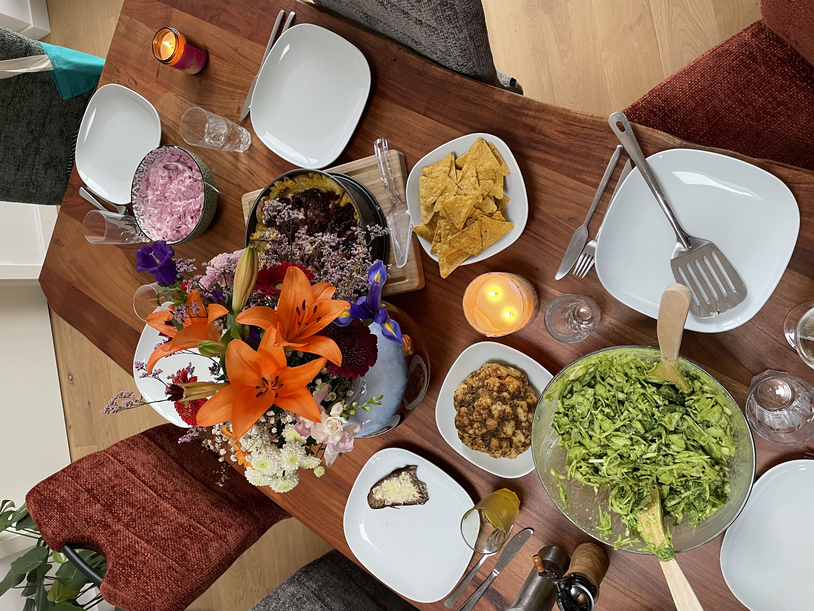
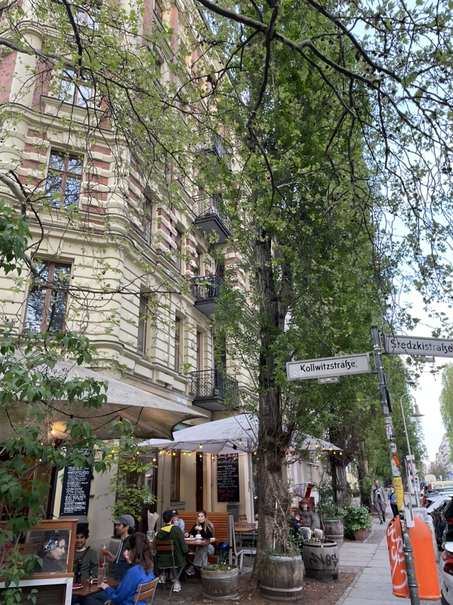

Wir waren in Berlin
von Mara am Dienstag, 27. Mai 2025
Das war super! Es war Ostern und das Wetter herrlich. Wobei manchmal war es eisig kalt, aber auch egal.

Wir haben die Ausstellung mit dem kleinen Hund besucht ( Sam Youkilis - Under the Sun; leider vorbei) und standen eine halbe Stunde an für ein Sauerteig Brot. Einen Tag später stand auch Harry Styles in der Schlange für das Brot. Knapp verpasst!
Wir waren georgisch essen, das war köstlich. Leider gibt es keine Bilder weil die Idee für den Blog erst im laufe des Essens kam. Umso besser dass wir da waren. Es gab eine große Vorspeisen Platte, leckere Limo, lustiges Brot und viel aus Aubergine. Sonst schlenderten wir noch durch Berlin und schauten uns das Treiben an. Beim Schloss Charlottenburg war es hauptsächlich kalt.
Einmal waren wir auch vietnamesisch essen bei monsieur Vuong, das war wie in 2008 und auch lecker.

An Ostern bereiteten wir alle TikTok Rezepte zu und der Green goddess Salat war wirklich enorm lecker!

Am nächsten Tag haben wir im Park gelümmelt, Ostereier versteckt und Ramen gegessen. Und Eis gegessen! In Summe eigentlich nur gegessen in ganz Berlin.
Eines Abends schauten wir einen Film (And Then We Danced) über georgische Tänzer, der war super!
Dann war Ostern vorüber und der Papst ist gestorben, aber die Menschen im Zug waren nicht in Aufruhr, ich dagegen sehr.
PS: Wir waren beide dabei!